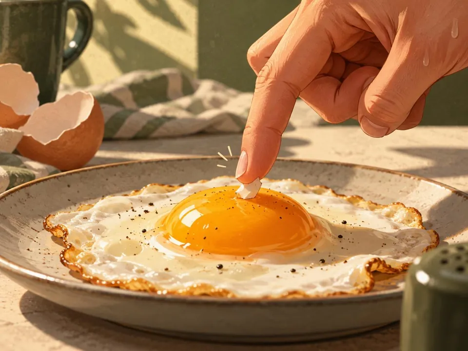

Una tarea insignificante.
Sacá. La. Cáscara.
Un huevo crudo. Un pedacito de cáscara.
¿Qué tan difícil puede ser?
Dificultad estimada: baja

UN SOLO PEDACITO. NADA MÁS.
La paciencia es un ingrediente.
Un huevo crudo. Un pedacito de cáscara.
¿Qué tan difícil puede ser?
